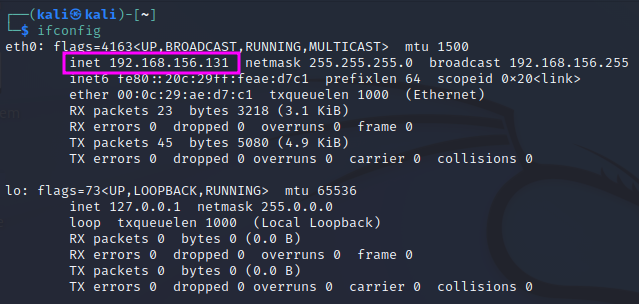
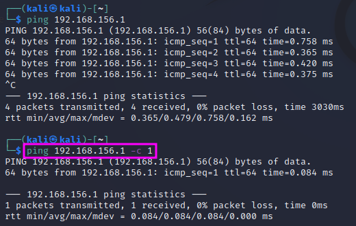
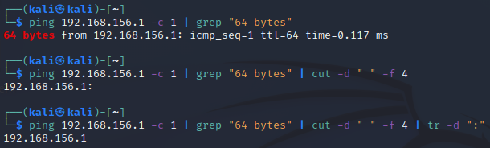

Scripting with Bash
This post is based on TCM Sec’s “Practical Ethical Hacking” course. It is the last topic in the “Introduction to Linux” chapter.
This chapter culminates in the following bash script. The purpose of this script is to accept a class C network (first 3 bytes of the IP addresses) and then determine the IP addresses of all active devices in that network that reply to a ping command. These IP addresses are probed automatically, and only the IP addresses are printed to the terminal if the ping command yielded a reply.
The script was developed as follows:
Start finding out what IP address range your computer is on with ifconfig. Look at the entry after inet, e.g. 192.168.178.x
The ping command runs indefinitely unless it is interrupted with <Ctrl> + <C> or if one restricts the number of packets to a certain count with ping <IP Address> -c 1. Here the number of sent packages is reduced to 1. One can see here that the output starts with “64 bytes…” if the ping’ed machine has sent a reply.
If one wants to extract only the successfully pinged IP addresses, Linux tools can be piped together to build a toolchain that is fit for this task: grep to filter only for successfully pinged IP addresses and cut to split the result into several items that are separated by space characters. With that latter step it is possible to isolate the IP address except for a trailing ‘:’. This colon can be deleted with the tr command, which can be used to translate or delete characters. Piping means that the output of one command is handed over to the next command as its input, using the ‘|’ character.
The first line of the following bash script tells the operating system where it can find the bash interpreter that executes the file. This combination #! is called shebang. A similar declaration is used at the beginning of Python scripts as well.
The for loop runs through the numbers from 1 to 254 and assigns them to the variable ip. It is important to use backwards apostrophe enclosing the seq expression. The for loop ends with the done keyword.
The actual IP address from the previous prelude has been replaced by $1 which is a place holder for the first command line argument that is entered after the script’s name ipsweep.sh when the script is executed. $0 denotes the program’s name. The term $1.$ip concatenates the 1st parameter and the respective value of ip with a ‘.’.
To make sure that the user calls the script with the right parameter list, we have added an if clause at the beginning that checks that the 1st parameter is not empty. Like in C or Python, equality can be tested with ‘==’. The condition is enclosed in square brackets ‘[]’. The structure of the if-then-else construct is: if [condition] then ... else ... fi
Finally, it is a good idea to add an ampersand (&) at the end of the ping command to make sure that ping instances are executed at the same time, otherwise the for loop will only continue when the ping command is finished. The ampersand thus increases the execution speed of the script. If a ping does not get a reply from a host and the script has to wait for the timeout, this would slow the execution of the script considerably.
#!/bin/bash
if [ "$1" == "" ]
then
echo "You forgot an IP address!"
echo "Syntax: ./ipsweep.sh 192.168.1"
else
for ip in `seq 1 254`; do
ping -c 1 $1.$ip | grep "64 bytes" | cut -d " " -f 4 | tr -d ":" &
done
fi
sleep 1
After the script has been saved, it has to be defined as an executable program with chmod +x ipsweep.sh.
I have noticed that there was always an issue with the last entry of the resulting IP list. To prevent a hickup at the end of the script, I have added a sleep command at the end of the script that lets makes the execution halt for 1 second so that the last ping command can be processed properly.
The output of the script can be redirected to a file, e.g. ips.txt, with .\ipsweep 192.168.178 > ips.txt. This file will contain just a list of active hosts on the given subnet, which can then be used for further automated processing, e.g. for automated port scanning with nmap:
for ip in $(cat ips.txt); do nmap $ip; done
Again, the ; before done could be replaced by an & to speed things up.